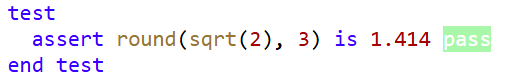
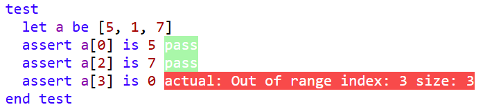
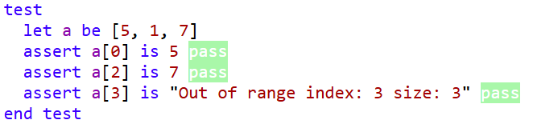
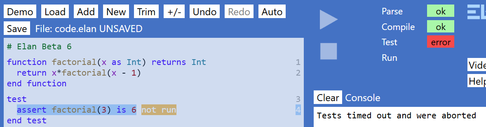
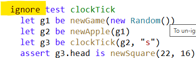

Instruction Set
This section defines the set of instructions that make up the Elan language, and which form the building blocks for any program.
There are three categories of instruction, which are distinguished where the instructions of that categeory are located within a program:
Global instructions (also referred to simply as 'globals') are located directly within a code file.
They are never indented from the left-hand edge, nor may they be located within other instructions.
Three of the globals - main, function, and procedure - are described as 'methods' and these defined one or more statements within them.
Four of the globals -
record,
class,
abstract class, and
interface - define data structures and these always contain
members.
The two remaining globals - constant, and enum - do not contain any further instructions.
Member instructions (also referred to simply as 'members') are located directly within the 'data structure' globals: record, class, abstract class, interface.
All members with the exception of property, define one or more statements within them.
Statement instructions (also referred to simply as 'statements) are located within 'methods.
Some of these statements may contain other statements.
All instructions are added into a program using the new code 'selectors'.
A comment is not an instruction: it will be ignored by the compiler and does not change how the program works.
Rather, a comment contains information
about the program, intended to be read by a person seeking to understand or modify the program.
Every comment starts with the symbol
# (known as 'hash') followed by some text or a blank line.
Comments can be inserted by a programmer at the same level as a
global,
member, or
statement instruction, by entering
# from the
new code selector.
Every Elan program has a single comment at the top of the file, which is generated by the system and may not be edited or deleted by the user.
This comment is known as the 'header' and gives the version of Elan being run, together with other optional information depending upon your user profile.
Global Instructions
When you navigate to a new code that is at global level (not indented from the left-hand edge of the code pane)
you will be shown the set of globals that may be inserted there, for example:
new code main procedure function test constant enum record class abstract interface #
The specific globals offered will depend upon your user profile. The full set of globals is shown here with links to explanations below:
main,
procedure,
function,
test,
constant,
enum,
record,
class,
abstract (in this context, short for
abstract class),
interface
#
Main method
A file must have a main method if it is intended to be run as program. (You may however develop and test code that does not have a main method, either as a coding exercise or for subsequent use within another program).
The main method defines the start point when a program is run.
The main method does not have to be at the top of the file, but this is a good convention to follow.
There may not be more than one main method in a file – and the global selector (above) will not show the main option when one already exists in the file.
Example:
+main 1
variable liname? set to [3, 6, 1, 0, 99, 4, 67]expression?2
call inPlaceRippleSortprocedureName?(liarguments?)3
print liexpression?4
end main
The main method may delegate work to one or more procedure or function.
Procedure
A procedure is a named piece of behaviour that may define parameters; unlike a function, a procedure does not return a value.
Also unlike a function, a procedure can have ‘side-effects’ - indeed it should have side-effects otherwise there would be no point in calling it!
For this reason the statements within a procedure can:
Include print statements (or methods).
include input methods or other ‘system’ methods (such as a random number generation).
call other procedures (or itself if ‘recursion’ is required).
Re-assign a parameter, provided that parameter definition is preceded by the keyword out Example:
+procedure inPlaceRippleSortname?(out arr as Array<of Int>parameter definitions?)5
variable changesname? set to trueexpression?6
variable lastCompname? set to arr.length() - 2expression?7
+repeat8
set changesvariableName? to falseexpression?9
+for ivariableName? from 0expression? to lastCompexpression? step 1expression?10
+if arr[i] > arr[i + 1]condition? then11
let tempname? be arr[i]expression?12
call arr.putAtprocedureName?(i, arr[i + 1]arguments?)13
call arr.putAtprocedureName?(i + 1, temparguments?)14
set changesvariableName? to trueexpression?15
end if
end for
set lastCompvariableName? to lastComp - 1expression?16
end repeat when not changescondition?
end procedure
Procedures are executed within a call statement, for example:
+main1
variable liname? set to [3, 6, 1, 0, 99, 4, 67]expression?2
call inPlaceRippleSortprocedureName?(liarguments?)3
print liexpression?4
end main
Notes
Parameters for a procedure are defined in exactly the same way as for a function; each parameter definition takes the form <name> as <Type>, for example age as Int.
Function
TODO
Test
Example of a Test:
+test 26
let li1name? be ["lemon", "lime", "orange"]expression?27
assert binarySearch(li1, "lemon")computed value? is trueexpected value? pass28
assert binarySearch(li1, "lime")computed value? is trueexpected value? pass29
assert binarySearch(li1, "orange")computed value? is trueexpected value? pass30
assert binarySearch(li1, "pear")computed value? is falseexpected value? pass31
let li2name? be ["lemon", "orange"]expression?32
assert binarySearch(li2, "lemon")computed value? is trueexpected value? pass33
assert binarySearch(li2, "orange")computed value? is trueexpected value? pass34
assert binarySearch(li2, "pear")computed value? is falseexpected value? pass35
let li3name? be ["lemon"]expression?36
assert binarySearch(li3, "lemon")computed value? is trueexpected value? pass37
assert binarySearch(li3, "lime")computed value? is falseexpected value? pass38
let li4name? be empty Array<of String>expression?39
assert binarySearch(li4, "pear")computed value? is falseexpected value? pass40
end test
Notes:
Elan tests are designed to test functions only. It is not possible to call a procedure or main routine within a test. Nor is it possible to use any System method (the same rule as within a function).
A test may be given a name and/or description, which is free-form text, just like a comment. This name/description is optional and plays no role in the execution of the test. You might give the test the same name as a function that it is testing, or you might describe a particular scenario that is being tested.
test methods may be written anywhere in the code, at the global (file) level.
A test method may contain multiple assert statements. When tests are run, the test runner (part of the Elan IDE) will attempt to run all assert statements and show the pass/fail outcome alongside each one. However, if the test hits a runtime error (as distinct from an assert failure) then execution of the test will stop and remaining asserts will be shown as ‘not run’.
In addition to assert statements, a test may contain any other statements that may be added into a function (except return).
All asserts should be at the top level within the test frame; none should be put into a loop structure.
Testing Float values
When testing Float values it is recommend that you always use the round function to round the computed result to a fixed number of decimal places. This avoids rounding errors and is easier to read:

Testing for runtime errors
If the expression you are testing causes a runtime error then the error will be displayed in the red fail message:

You can also test for the error message successfully, for example:

It is not possible to test for stack overflow exceptions caused, for example, by writing a recursive method with incorrect (or missing) exit conditions. A stack overflow will cause the test runner to ‘time out’ and all tests will be marked ‘not run’:

If this occurs, mark the tests that you added since the last successful test run with ignore (see below), and then remove the ignores one by one until the cause is identified and can be fixed.
Marking a test with ‘ignore’
It is possible to mark a test with the ignore keyword, by selecting the test frame and then hitting Ctrl-i for example:

When a test is marked with ignore, that test will not be executed when the tests are run, and its result will be shown as ‘not run’. The overall test status will also show in the ‘warning’ status (amber colour), even if all the tests that did run passed. This is to discourage you from leaving a test marked ignore for long.
The principal reason for marking a test ignore is when either the test code or code in any function being called, would not terminate. This typically means that there is a loop (or a recursive call) with no exit condition, or where the exit condition is never met.
If you do create such code without realising it, then when the tests are executed the test runner will ‘time out’ after a few seconds (most tests will pass in milliseconds), and an error message will be shown on the Console. The test that caused the time-out will automatically then be marked ignore. Your priority should then be to identify the cause of the time-out and attempt to fix it before then restoring the test by selecting the test frame and hitting Ctrl-i . (Ctrl-i is a toggle for setting and unsetting an ignore status)
Constant
A constant defines a named value that cannot change.
A constant is always defined at ‘global’ level (directly within a file) and is global in scope. A constant may not be defined within any method. (However, see [missing hyperlink]).
The name of a constant follows the rules for an Identifier.
The value to which a constant is set must be a Literal value, of one of the following Types: Int, Float, Boolean, String, Dictionary, or DictionaryImmutable.
Examples:
+constant phiname? set to 1.618literal value or data structure?1
+constant maxHitsname? set to 10literal value or data structure?2
+constant warningMsgname? set to "Limit reached"literal value or data structure?3
+constant fruitname? set to {"apple", "orange", "banana"}literal value or data structure?4
+constant blackname? set to 0x000000literal value or data structure?5
+constant redname? set to 0xff0000literal value or data structure?6
+constant scrabbleValuesname? set to {"A":1, "B":3, "C":3, "D":2, "E":1, "F":4, "G":2, "H":4, "I":1, "J":8, "K":5, "L":1, "M":3, "N":1, "O":1, "P":3, "Q":10, "R":1, "S":1, "T":1, "U":1, "V":4, "W":4, "X":8, "Y":4, "Z":10}literal value or data structure?7
+constant coloursname? set to {Suit.clubs:black, Suit.diamonds:red, Suit.hearts:red, Suit.spades:black}literal value or data structure 'Suit' is not defined? 8(In the last example above, Suit is an Enum).
Enum
An enum – short for ‘ 'enumeration' ’ – is the simplest form of ‘user-defined Type’.
It specifies a set of values, each of which is defined as a name, such that a named value of that enum Type must always hold one of those values.
Examples
+enum ActionName? stand, drawvalues?245
+enum OutcomeName? undecided, lose, draw, win, winDoublevalues?246
+enum StatusName? pending, playing, standing, blackjack, bustvalues?247
Type name
The name given to an enum (see below), which must begin with an upper-case letter, is used as the Type name when passing a value to or from a procedure or function.
Using an enum
The value is specified by the Type name for the specified enum, followed by a dot and the value name, for example:
variable x set to Status.ready
Notes
enums are read-only: once they have been defined it is not possible to add, remove, or update their values.
Record
A record is a user-defined data structure that is given a Type name – that must begin with an upper-case letter.
The record defines one or more properties, each of which has a name (starting with a lower-case letter) and a Type.
The Type of a property may be any simple value Type (as in the example above), or a List,
another Type of record (or even the same Type of record).
What distinguishes a record Type from a List is that its members may be of different Types,
and what distinguished a record Type from a Tuple is that each member has a specific name.
Examples
>
+record SquareName?64
property xname? as IntType?65
property yname? as IntType?66
end record
+record GameName?53
property headname? as SquareType?54
property bodyname? as List<of Square>Type?55
property priorTailname? as SquareType?56
property applename? as SquareType?57
property isOnname? as BooleanType?58
property rndname? as RandomType?59
property graphicsname? as BlockGraphicsType?60
property keyname? as StringType?61
end record
Having defined a record Type, such as Game above, you can create as many instances as you wish using the following syntax to specify the values:
let g1name? be new Game() with
head set to newSquare(22, 15),
key set to "d",
isOn set to trueexpression?52
Note that you are not required to provide a value for each property because, where a property is not specified in the ‘with clause’ (as above), that property will be given the empty (default) value of the correct Type.
You can then read the values from the properties using ‘dot syntax’ for example:
print sq1.size
record Types are immutable: the properties on an instance may not be changed, directly. However, you can easily create another instance that is a copy of the original, with all the same property values except for any specific changes made in another with clause. The newly-minted copy (with changes) must be assigned to a new named value. For example:
let sq1 be new Square() with
x set to 3.5,
y set to 4.0,
size set to 1.0
let sq2 be copy sq1 with
size set to 2.0,
colour set to red
Or even to the same name if that name is a variable:
variable a set to new Square() with x to 3.5, y to 4.0
set a to copy a with x to 3.7
This last example shows how you enter the comma-separated with clauses. The earlier examples show how the Editor displays a set of with clauses.
If you want to use one or more existing property values in order to determine a new value, the property name(s) must
be prefixed with the name of the instance being copied, for example:
>
let sq2 be copy sq1 with
size set to sq1.size + 3
Note that a record Type has some similarity to a class:
Both are user-define data structures
Both are given a ‘Type name’
Both may define one or more properties, each with a name and Type
However a record is different from a class in that:
A record does not define a constructor
A record cannot define any methods
A record is immutable (like a List or a String). You can create a copy with specified differences but you cannot modify a property on a given instance.
A record instance may be created or copied using a with clause, whereas with may not be used on a class instance.
Record deconstruction
A record may be ‘deconstructed’, meaning that its properties are read into separate variables using the same syntax as for deconstructing a Tuple. For example, assuming that Square is a record defined as in the example above then this code:
let x, y, size, colour be mySquare
will read the properties into the four names defined.
Note
When deconstructing, the names of the values must match the names of the properties of the record. However, the ordering of the names does not have to match the order in which the properties are defined in the record.
Class
See also: Inheritance
A class is a user-defined Type offering far richer capability than an enum.
(A record is in some ways similar to a class but simpler: it defines properties, but has no constructor and no methods. See Working with records).
Definition
Here is an example of class definition, taken from the Snake OOP demo program:
class Apple
constructor(board as Board)
set property.board to board
end constructor
property board as Board
property location as Square
procedure newRandomPosition(snake as Snake)
repeat
variable ranX set to randomInt(0, board.width - 1)
variable ranY set to randomInt(0, board.height - 1)
set location to new Square(ranX, ranY)
end repeat when not snake.bodyCovers(location)
end procedure
function updateGraphics(gr as BlockGraphics) returns BlockGraphics
return gr.withBlock(location.x, location.y, red)
end function
end class
Notes
A class must have:
A name that, like any other Type, must begin with an upper-case letter.
A class may define:
One or more properties – see Property
function methods – see Function method
procedure methods – see Procedure method
A constructor which may be used for setting up the values of properties. The constructor may optionally define parameters to force the calling code to provide initial values. However, it is not necessary to add a constructor if you have no need to initialise properties. Code in the constructor may make use of any functions, and follows the same constraints as a function (i.e. may not call any procedure, whether defined on the class or outside).
Using a class
A class is instantiated using the keyword new followed by the class name and brackets, which should enclose the comma-separated arguments required to match the parameters (if any) defined on the constructor for that class. For example (also from the Snake OOP demo):
variable board set to new Board(40, 30)
variable currentDirection set to Direction.up
variable snake set to new Snake(board, currentDirection)
variable apple set to new Apple(board)
The created instance may then be used within expressions, like any other variable.
Inheritance
An ordinary class (also known as a 'concrete class') may optionally inherit from just one abstract class
but may additionally inherit from any number of interfaces.
The concrete class must define for itself a concrete implementation of every abstract member defined in the abstract class or any interfaces that it inherits from, directly or indirectly.
Notes
An abstract class must be declared above any class that inherits from it. This is the only case where the order of definition (of global constructs) matters.
The abstract class (if any) and the interfaces (if any) that a concrete class inherits from may not contain duplicates of any abstract member. Any duplicated definitions in the hierarchy will result in a compile error. If such duplications arise, you should factor out the common member definitions, and move them up the hierarchy or into new interfaces inherited by the interfaces and/or classes that need them.
Also, inheritance hierarchies must form a tree, that is you must avoid creating a ‘circular dependency where, for example, Type A inherits from Type B, which inherits from Type C, which inherits from Type A.
The various ‘super-Types’ (abstract class and/or interfaces) that a concrete class inherits from may not define conflicting members, e.g. members with the same name but having different Type signatures.
Abstract Class
See also: Inheritance
An abstract class may not be instantiated (and hence may not define a constructor). It may define concrete members i.e.:
a property
a function
a procedure
As with a concrete class, any of these members may be made private after the corresponding frame has been added, by selecting that member frame and pressing Ctrl_p.
These concrete members are automatically inherited by any sub-class, but they may not be overridden (re-defined) by the sub-class. Therefore you should define concrete members only if they are intended to work identically on every sub-class.
You may also define abstract methods on an abstract classes i.e. abstract property, abstract function, abstract procedure. Such methods define only the signature of the method, not the implementation (body). Therefore they have no end statement. For example:
abstract function calculateDiscount() as Float
If you wish to have several sub-classes of an abstract class that share a common implementation for a method, but require that some of the sub-classes can define a different implementation, then you should:
Define the method as abstract on the superclass
Define a concrete implementation on the superclass with a similar, but slightly different name e.g. having a prefix such as: default
Each sub-class must then define its implementation of the abstract method, but the ones needing a common implementation can be just one line, delegating responsibility up to the ‘default’ method on the superclass.
Interface
See also: Inheritance
An interface is similar to an abstract class, with the difference that it may define only abstract members. The advantage of using an interface instead of an abstract class is that a concrete class can inherit from multiple interfaces. See Inheritance.
An interface may inherit only from other interfaces.
Important: An interface must not re-declare abstract interfaces that are defined in any interface it inherits from, directly or indirectly.
Member Instructions
When you navigate to a new code that is at member level
(located directly within a record, class, abstract class, or interface)
you will be shown the set of statements that may be inserted there, for example:
new code constructor function procedure property private... #
The specific members offered will depend upon the context, and/or upon your user profile.
The full set of entries is shown here, with links to explanations below:
constructor,
property,
procedure,
function,
abstract property,
abstract procedure,
abstract function,
private property,
private procedure,
private function,
#
Constructor
A concrete class may define a single constructor, which may:
initialise any properties with fixed values
define one or more parameters, which are then used to initialise properties
If a class does define a constructor, and the constructor defines any parameters, then when the class is instantiated (using new) then values of
the correct types must be provided, for example, if the class Snake defines this constructor:
+constructor(x as Int, y as Intparameter definitions?)67
set property.xvariableName? to xexpression?68
set property.yvariableName? to yexpression?69
end constructor
then it may be instantiated like this:
let tailname? be new Square(20, 15)expression?15
Property
Examples:
property height as Int
property board as Board
property head as Square
property body as [Square]
A property is defined on a Class and must specify a name (conforming to the rules for an Identifier and a Type.
A property may be marked private, in which case it is visible only to code within the class and, if defined on an abstract class, within its sub-classes. This is done by selecting the property frame and pressing Ctrl-p. (Pressing these keys again will remove the private modifier).
If not marked private, a property may be read but not be written to. Properties may only be modified from outside the class by means of a Procedure method.
A property may be given an initial value in the constructor.
If the property is not initialised within the constructor then it will automatically be given the empty value for that Type. You may test whether a property contains this default value by writing e.g.:
if head is empty Square
Whenever you wish to access a property from within a method (or from within the constructor) on the same class, then the name of the property must be prefixed with the ‘qualifier’: property. (‘property-dot’). This applies whether you are reading or setting the property. By this means you can have a method parameter with the same name as a property, but they are unambiguous, because the property must be prefixed. A common pattern is to use the same name in a ‘setter’ method, for example:
constructor(board as Board)
set property.board to board
end constructor
procedure setHeight(height as Int)
set property.height to height
end procedure
Procedure Method
A ‘procedure method’ follows the same syntax and rules as a global procedure. The differences are:
A procedure method, like a function method, is always referenced (used) by code outside the class using ‘dot syntax’ on an instance.
A procedure method may read, or write to, any property defined on the class.
A procedure method may be marked private, in which case it is visible only to code within the class and, if defined on an abstract class, within its sub-classes. This is done by selecting the property frame and then pressing Ctrl-p. (Pressing these keys again will remove the private modifier).
Function Method
A function method follows the same syntax and rules as a global function>. The differences are:
A function method is always referenced (used) by code outside the class using ‘dot syntax’ on an instance.
A function method may directly reference (read only) any property defined on the class as though it were a variable/parameter.
A function method may be marked private, in which case it is visible only to code within the class and, if defined on an abstract class, within its sub-classes. This is done by selecting the property frame and then pressing Ctrl-p. (Pressing these keys again will remove the private modifier).
asString() method
asString method. This is just a regular function method with a specific name, no parameters and returning a String. If defined for a class, then if an instance of the class is printed, the asString function method will automatically be used. Typically asString will return a string made up of one or more of the property values, perhaps with additional text, or the results of function calls.
Abstract Property
TODO
Abstract Procedure Method
TODO
Abstract Function Method
TODO
Statement Instructions
When you navigate to a new code that is at statement level
(located within a global or a member instruction)
you will be shown the set of statements that may be inserted there, for example:
new code call each for if let print repeat set throw try variable while #
The specific statements offered will depend upon the context, and/or upon your user profile.
The full set of entries is shown here, with links to explanations below:
assert
call
each
else
for
if
let
print
repeat
set
throw
try
variable
while
#
Assert statement
Procedure Call
Each loop
Else clause
For loop
Notes:
The three defining values (from, to, and step) must all be integers – positive or negative.
They may be defined by literal integers, variables of integer Type, or expressions that evaluate to an integer.
However, if you require a negative step then the literal value, variable, or expression must start with a negative sign – as this is needed at compile time to determine the nature of the exit condition. So if you have a variable s that holds a negative value to be used as the step, then you will need to write something like the following:
variable s set to -3
for i from 100 to 0 step -(-s)
..
end for
If statement
See also if expression
Example1:
+if head is applecondition Cannot do equality operations on Procedures or Functions? then2
call setAppleToRandomPositionprocedureName?(apple, bodyarguments'apple' is not defined?) 'setAppleToRandomPosition' is not defined3
else if?4
call body.removeAtprocedureName 'body' is not defined?(0arguments?) 5
end if
Example 2:
if item is value then
set result to true
>else if item.isBefore(value) then
set result to binarySearch(list[..mid], item)
else
set result to binarySearch(list[mid + 1..], item)
end if
Notes
The else clause is optional
You can add as many else if clauses as you wish, but only one unconditional else (which, if present, must be the last clause).
Let statement
Print statement
Repeat loop
Set statement
Throw statement
You can deliberately generate, or ‘throw’, an exception when a specific circumstance is identified with a throw statement, for example:
throw exception "something has happened"
Try statement
Where another piece of code might throw an exception, for example when calling a System method that is dependent upon external conditions, it may be executed within a try statement, for example:
try
call foo()
print "not caught"
catch exception in e
print e
end try
The variable holding the exception (by default named e, but this may be changed by you) is of Type String. You may compare the exception message to one or more expected messages and, if the message does not match an expected exception, you may choose to throw the exception ‘up’, as in this example:
try
call foo()
print "not caught"
catch exception in e
if e isnt "An expected message" then
throw exception e
end if
end try
Variable statement
While loop
Types defined as part of the language
Int
An integer or whole number, i.e. one that has no fractional component.
Type name
Int
Defining a literal integer
variable meaningOfLife set to 42
Default value
0
Constraints
Maximum value: 253 – 1 which is just over 9 × 1015
Minimum value: – (253 – 1)
If either limit is exceeded the number will automatically be represented as a Float, with possible loss of precision.
Notes
A value assigned to an Int may be expressed in decimal or, if preceded by 0x, in hexadecimal. Hexadecimal is useful for defining colours and Unicode codepoint values.
An Int may always be passed as an argument into a method that specifies a Float.
Float
A ‘floating-point number’, i.e. a number that may have both integer and fractional parts.
Type name
Float
Defining literal floating-point value
variable a set to 1.618
Constraints
Since Elan compiles to JavaScript, the constraints on floating point numbers are those of JavaScript:
Maximum value: just over 1 × 10308
Minimum value: approximately 5 × 10-324
For greater detail, refer to the official JavaScript documentation
Notes
A variable that has been defined as being of Type Float may not be passed as an argument into a method that requires an Int, nor as an index into an Array, even if the variable contains no fractional part. However, it may be converted into an Int before passing, using the functions floor() or ceiling():
floor() returns the integer value left by removing any fractional part, and
ceiling() returns the lowest integer greater than the Float value if does have a fractional part.
If you wish to define a variable to be of Type Float but initialise it with an integer value then add .0 on the end of the whole number, for example:
variable a set to 3.0.
Boolean
A Boolean value is either true or false.
Type name
Boolean
Defining a literal Boolean
variable a set to true
true and false must be written lower-case
Default value
false
String
A String represents ‘text’ i.e. a sequence of zero or more characters.
Type name
String
Defining a literal string value
variable a set to "Hello"
Strings are always delineated by double-quotes.
Default value
"", known as ‘the empty string’.
Notes
As in most programming languages, strings are immutable. When you apply any operation or function with the intent of modifying an existing string, the existing string is never modified. Instead, the operation or function will return a new string that is based on the original, but with the specified differences.
Strings may be appended to using the plus operator, for example
print "Hello" + " " + "World"
A newline may be inserted within a string as \n, for example:
print "Hello\nWorld"
You may insert single-quotes ' within a string.
Interpolated string
Elan strings are automatically interpolated. This means that you may insert the values of variables or simple expressions within a string by enclosing them in curly braces. For example (assuming that the variables a and b are already defined as integers) :
print "{a} times {b} equals {a*b}"
You cannot include the characters ", {, or } directly within a literal string because of their special meanings. Instead, you use the constants quotes, leftBrace and rightBrace respectively:
print "This is double quote mark: " + quotes
Alternatively, you can insert their Unicode codepoints by means of the unicode() standalone function:
print "This is a double quote mark: " + unicode(34)
or
print"Here are the curly braces: {unicode(123)} and {unicode(125)}"
Dot methods on a String
Note: There are no ‘substring’ methods in Elan because you can always use an index range get a substring e.g. s[3..7] gives a string containing the fourth through the eighth characters of string s. See Indexed Value.
upperCase() returns String
returns a new string based on the input with all alpha-characters in upper-case.
lowerCase() returns String
returns a new string based on the input with all alpha-characters in lower-case.
contains(partString as String) returns Boolean
takes a single parameter of Type String, and returns a Boolean value indicating whether or not that argument string is contained within the string on which contains was called. Usage:
variable a set to "Hello World!"
print a.contains("ello")
prints true
replace(match as String, replacement as String) returns String
returns a new string where all occurrences of the match string are replaced with the replacement string.
trim() returns String
returns a new string based on the string on which the method is called, but with all leading and trailing spaces removed.
indexOf(partString as String) returns Int
The following methods are used for comparing strings alphabetically, for example in a sort routine:
isBefore(otherString as String) returns Boolean
isAfter(otherString as String) returns Boolean
isBeforeOrSameAs(otherString as String) returns Boolean
isAfterOrSameAs(otherString as String) returns Boolean
asUnicode() returns Int
returns the Unicode (integer) value for a character. If the string is more than one character long, the Unicode value returned is that for the first character in the string only. Note that the opposite method to create a single-character string from its numeric Unicode value is e.g. unicode(123) which returns "{".
Arrays and Lists
Quick reference
|
Array |
List |
|---|
| Type form |
Array<of String>
Array2D<of String>
List<of String>
|
| Literal |
["plum", "pear"] |
{"plum", "pear"} |
| Literal empty |
empty Array<of String> |
empty List<of String> |
| Initial size (filled with default values) |
variable a set to
createArray(10, "x")
createArray2D(8, 8, "")
In each case, the last argument is the value to which each element is initialised, and defines the Type of elements in the Array
|
Not applicable |
| Read from position |
a[3]
board[3][4]
|
[3] |
| Read range |
a[5..9] |
A[5..9)] |
| Put a value |
call a.putAt(3, "pear")
2D:call board.putAt2D(3,4,"K")
|
set a to a.withPutAt(3, "pear") |
| Append and Prepend |
call a.append("pear")
call a.prepend("pear")
call a.appendArray(anotherArray)
call a.prependArray(anotherArray)
|
Append: set a to a + {"pear"}
Prepend: set a to {"pear"} + a
Append/prepend a list: set x to listA + listb
|
| Insert |
call a.insertAt(3, "pear") |
set a to a.withInsertAt(3, "pear") |
| Remove by index |
call a.removeAt(3) |
set a to a.withRemoveAt(3) |
| Remove by value |
call a.removeFirst("pear")
call a.removeAll("pear")
|
set a to a.withRemoveFirst ("p")
set a to a.withRemoveAll ("p")
|
| Deconstruction into head (first element) and tail (all the rest) |
Not applicable |
variable x:xs set to myList
set h:t to myList
variable _:tail set to myList
variable head:_ set t myList
|
Array
An ‘Array’ is a simple data structure that holds multiple elements of the same Type.
Unlike a List, an Array is mutable, meaning that the elements within the data structure can be altered without creating a new Array from the old.
The Type is specified in the following form:
Array<of String> for an Array of Type String
Array<of Int> for an Array of Type Int
where, in these examples, String and Int represent the Type of each element in the Arrays. The element Type can be any Type value – Int, Boolean, Float, String – or the name of a specific class such as Player, or an enum such as Direction. It may also be another data structure, including another Array (sometimes referred to as a ‘nested Array’).
Creating an Array
An Array may be defined in ‘literal’ form, ‘delimited’ by square brackets, and with all the required elements separated by commas. The elements may be literal values but must all be of the same Type:
variable fruit set to ["apple", "orange", "pear"]
including ‘nested Arrays’:
variable coordinates set to [[3.4, 0.1, 7.8], [1, 0, 1.5], [10, -1.5, 25]]
or variables (provided they are all of the same Type):
variable values set to [x, y, z]
or a mixture of literal values and variables (all of the same Type):
variable values set to [3.1, y, z]
where y and z are existing variables of Type Float.
You may also define an Array of a specified size, with each element initialised to the same value, for example:
variable fruit set to createArray(20, "")
will create an Array of Type String with exactly 20 elements, each initialised to the empty String and:
variable scores set to createArray(12, 100.0)
will create an Array of Type Float with exactly 12 elements, each initialised to 100.0.
Although the resulting Array may still be expanded subsequently (by using the add procedure), the typical use for these two methods is for cases that would originally have used a traditional (fixed-size) array:
Dot methods on an Array
Functions:
myArray.contains(item) returnss true or false
myArray.asList() returnss a List containing the same elements as the Array on which the method was called. This is often used to permit an Array to be passed into a function that has been designed to accept a List.
Procedures:
call fruit.append("banana")
call fruit.appendArray(anotherArray)
call fruit.insertAt(4, "cherry")
call fruit.prepend("melon")
call fruit.putAt(2, "grape")
call fruit.removeAll("apple")
call fruit.removeAt(3)
call fruit.removeFirst("apple")
Using an Array
Elements are read using an index in square brackets – the first element being element [0]. The last element of an Array of size 10 will therefore be accessed by the index [9].
Attempting to read an element by index, where that element does not exist, will result in an ‘Index out of range’ run-time error.
Unlike in many programming languages you may not modify data by index: elements are modified by calling the putAt procedure on the Array.
Try these examples (the last one will produce an error – make sure you understand why):
variable a set to createArray(10, 0)
print a
print a.length()
call a.putAt(0, 3)
call a.putAt(1, 7)
print a
print a[0]
print a[a.length() -1]
print a[a.length()]
Unlike in some languages, Elan Arrays may be dynamically extended, using append and prepend methods.
variable a set to createArray(3, 0)
variable b set to createArray(3, 10)
print a
print b
a.append(3)
b.prepend(7)
print a
print b
a.appendArray(b)
print a
2-dimensional Array
In Elan, as in many languages, a ‘2-dimensional Array’ is just an Array of Arrays. However, Elan provides a couple of convenient short-cut methods for working with such data structures:
variable board set to createArray2D(8, 8, "")
will create an Array of Arrays with a total of 64 elements each of Type String, and initialised to the empty String. The Type is determined by the Type of the third parameter, which might be an Int, Boolean, or user-defined Type. It need not be an empty value. The Array2D need not be square – it may be rectangular.
It is possible to create an 2-dimensional Array with no elements, for example by:
let a be new Array2D<of Int>()
However, this is not recommended as subsequently adding elements takes a lot of care and effort. It is recommended that you always use the method createArray2D to create a 2-dimensional Array initialised to the desired size. That way you can modify individual elements in the initialised Array with e.g.:
call board.putAt2D(3,4,"K")
and you can read individual elements with a double index, for example:
for col from 0 to 7 step 1
for row from 0 to 7 step 1
print board[col][row]
end for
end for
If you want to define a function or procedure with a parameter that should be a 2-dimensional Array, the Type is specified as Array2D, for example:
Array2D<of String>
Array2D<of Int>
Creating Arrays of specific sizes
The following methods return an Array of a specified size, and with all elements initialised to a specified value. Although the resulting Array may still be expanded subsequently (by using the add procedure), the typical use for these two methods is for cases that would originally have used a traditional (fixed-size) array:
createArray(size as Int, initialValue as Type) returns [Type]
where Type is one of the following Types: Int, Float, Boolean, String or any Type of enum.
There is also a variant of the method that creates a ‘2-dimensional’ rectangular Array (actually an Array of Arrays):
createArray2D(noOfrows as Int, noOfColumns as Int, initialValue as T) returns [[Type]]
List
A List is a simple data structure that holds multiple elements of the same Type.
A list, like a String but unlike an Array, is immutable. You can still insert, delete, or change elements in a List, but the methods for these operations do not modify the input List: they return a new List based on the input List but with the specified differences.
Type name
The Type is specified in the following way:
List<of String> for a List of TypeString
List<of Int> for a List of Type >Int
List<of List<of Int>> for a List of Lists of Type Int
Creating a List
A List may be defined in ‘literal’ form, ‘delimited’ by curly braces, and with all the required elements separated by commas. The elements may be literal values but must all be of the same Type):
variable fruit set to {"apple", "orange", "pear"}
Dot methods on a List
The dot methods on a list are all functions.
myList.contains(item) returns true or false
myList.asArray() returns a new Array with the same contents as myList
The following functions all return a new List, copied from the List on which the function was called, but with the differences specified by the function parameters:
myList.withInsertAt(4, "cherry")
myList.withPutAt(2, "grape")
myList.withRemoveAt(3)
myList.withRemoveFirst("apple")
myList.withRemoveAll("apple")
Try these examples:
variable fruit set to empty List<of String>
print fruit
set fruit to fruit + "apple"
set fruit to fruit + "pear"
print fruit
set fruit to "orange" + "pear"
print fruit[0]
print fruit.length()
print fruit[fruit.length() -1]
variable head:tail set to fruit
print head
print tail
Dictionaries
There are two forms of dictionary in Elan: an ordinary Dictionary (which is mutable) and a DictionaryImmutable (which is not).
Quick reference
|
Dictionary |
DictionaryImmutable |
|---|
| Type form |
Dictionary<of String, Int> |
DictionaryImmutable<of String, Int> |
| Literal |
["a":1, "b":4] |
{"a":1, "b":4} |
| Literal empty |
empty Dictionary<of String, Int> |
empty DictionaryImmutable<of String, Int> |
| Read the value for a given key |
d["a"] |
d{"a"} |
Get all keys
Get all values
|
and d.values()
Both return an immutable list of the appropriate Type
|
| Define (or change) a value associated with a key |
call d.putAtKey("c", 7) |
set d to d.withPutAtKey("c", 7) |
| Remove both key and value |
call d.removeAtKey("c") |
set d to d.withRemoveAtKey("c") |
Dictionary
Type name
In the following example, the keys are of Type Int, and the values associated with the keys are of Type String:
Dictionary<of String, Int>
For both Dictionary and DictionaryImmutable the values can be of any Type, including a specific Type of class, a List, another Dictionary or some other data structure. However, the key’s Type must be one of: Int, Float, String, Boolean, or a specific Type of enum.
Defining a literal
A literal Dictionary is defined as a comma-separated list of ‘key:value pairs’ (key,colon.value) surrounded by square brackets:
variable scrabbleValues set to ["a":1, "b":3, "c":3, "d":2]
Using a Dictionary
Try these examples:
variable dict set to new Dictionary<of String, Int>()
print dict
call dict.putAtKey("a", 3)
print dict["a"]
call dict.removeAtKey("a")
print dict
Constraints
Key values must be unique within a Dictionary.
There is no difference in syntax between adding an entry with a new key, and setting a new value for an existing key: if the key does not exist in the dictionary, it will be added.
Dot methods on a Dictionary
See also Quick reference.
putAtKey
removeAtKey
keys
values
DictionaryImmutable
An immutable dictionary may be defined in a constant.
Type name
In the following example, the keys are of Type Int, and the values associated with the keys are of Type String:
DictionaryImmutable<of String, Int>
Defining a literal
A literal DictionaryImmutable is defined as a comma-separated list of ‘key:value pairs’ (key,colon.value) surrounded by curly braces:
variable scrabbleValues set to {"a":1, "b":3, "c":3, "d":2}
Using an Immutable Dictionary
Try these examples:
variable immD set to new DictionaryImmutable<of String,Int>()
print immD
set immD to immD.withPutAtKey("a", 3)
print immD["a"]
set immD to immD.withRemoveAtKey("a")
print immD
Dot methods on an Immutable Dictionary
See also Quick reference.
hasKey
withPutAtKey
withRemoveAtKey
Tuple
A tuple is a way of holding a small number of values of different Types together as a single reference. They are referred to as 2-tuples, 3-tuples, etc. according to the number of values they hold. Common uses include:
Holding a pair of x and y coordinates (each of Type Float) as a single unit.
Allowing a function to pass back a result comprised of both a message in a String and a Boolean indicating whether the operation was successful.
A tuple is considered a ‘lightweight’ alternative to defining a specific class for some purposes.
Type name
Written as a comma-separated list of the Type of each member, surrounded by round brackets:
(Int, Int, Int)
(String, Boolean)
Defining a literal tuple
A tuple is defined, where it is needed, by the keyword tuple and a number of elements, each being a variable or a literal value, separated by commas and surrounded by round brackets, for example:
let coords be tuple(x, y)
let myList be {tuple(1,1), tuple(1, 2)}
let foo be tuple(3.769, 4.088, true, 5, "correct")
call proc1(a, coords, tuple(x, y))
return tuple(3, 4)
Using a tuple
You may pass a tuple into a function, or return one from a function, for example:
variable d set to distanceBetween(point1, tuple(12.34, 20.0))
An existing tuple (for example point1 below) may be ‘deconstructed’ into new variables or named values (where the number of variables/names must match the number of elements in the tuple):
let x, y set to point1
variable x, y set to point1
or into existing variables of the correct Type:
variable a set to 3
variable b set to 4
set a, b to point1
The ‘discard’ symbol _ (underscore) may also be used when deconstructing a tuple when there is no need to capture specific elements:
variable x, _ set to point1
Notes
As in most languages, Elan tuples are immutable. Once defined they are effectively ‘read only’. You cannot alter any of the elements in a tuple nor (unlike a List for example) can you create a new tuple from an existing one with specified differences.
You cannot deconstruct a tuple into a mixture of new and existing variables.
tuples may be nested: you can define a tuple within a tuple.
Func
A function may be passed as an argument into another function (or a procedure), or returned as the result of calling another function. This pattern is known as ‘Higher order Function’ (HoF), and is a key idea in the functional programming paradigm. To define a function that takes in another function as a parameter, or returns a function, you need to specify the Type of the function, just as you would specify the Type of every parameter and the return Type for the function.
Type name
The Type of any function starts with the word Func followed by angle brackets defining the Type of each parameter, and the return Type for that function, following this syntax:
Func<of String, String, Int => Boolean>
This example defines the Type for a function that defines three parameters of Type String, String, and Int respectively, and returns a Boolean value. T this Type would match that of a function definition that started:
Function charactersMatchAt(a as String, b as String, position as Int) returns Boolean